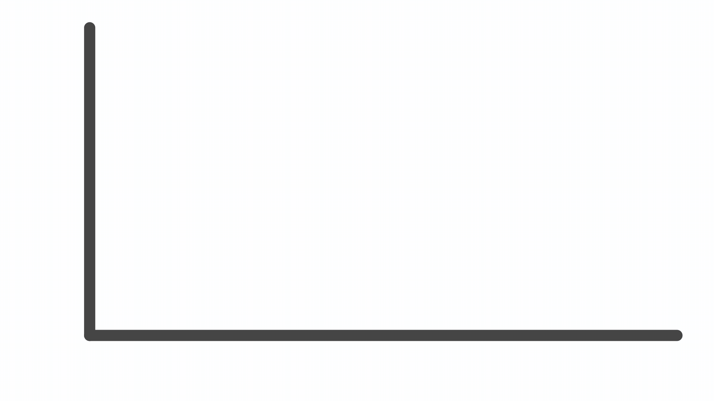

5 Reasons to Track your Personal Stats - Gamify your Life
Jul 31 '21 • Written by Yassen Shopov
📖 11 minute read
If you have found this link somewhere in the depths of Reddit, or you were specifically searching for a reason to track your own personal data, you probably have the same mindset as myself - a collector mindset.
I knew for the longest time that I liked keeping things tidy, or if anything, in a specific order of my preference. However, when I got into uni and information, documents, stuff, started coming in heaps, I figured it was not just a weird quirk of mine to collect and organize my data, it was a useful skill. What started as a side effect of my potentially undiagnosed ADHD turned out to be quite practical when dealing with so-called adult matters.
For Christmas last year, my girlfriend gave me the gift I didn’t even know I’d love this much at the time - a Xiaomi Fitness Tracking band. I don’t really track my calories or steps, but what I found really useful and entertaining to an extent, is my sleep data. This includes the (almost perfectly precise) time of waking up, falling asleep, deep sleep, and REM sleep percentage. I normally didn’t think too hard about my sleep, even less about a possible sleep schedule, but now that I got numbers associated with those rather abstract actions, it all changed.
Now I was actually motivated to improve my ‘sleep score’, even if it was just a game. But that’s the key. I had gamified the process, and it brought me the oh-so-needed dopamine. This gave me the incentive to actually want to better my sleep, which served as a key habit on top of which I managed to stack others, including working out, eating better, working on my creative expressions, etc.
Now, this is not an ad for the fitness band, even though that would be cool. It just serves as an example of how much is possible to do when you gamify your life.
And what does the gamification revolve around? Tracking numbers, more importantly tracking your stats, as if they were the stats of your RPG character.
Now, before I give you my 5 reasons to track the said stats, which I’ll helpfully list under this paragraph, let me include what those stats may actually be. I’ve been dabbling with an idea for a personal data management software for a while, and it gave me ideas for the many things that can be tracked in your life, which when monitored together may give rise to interesting conclusions, like connections between your sleep and diet, among others.
The stats that you may want to track are: sleep data, calories, weight, steps, finances (net worth), caffeine intake, water intake, mood levels (this is more abstract of course), workouts, hours spent working, hours spent on social media, time passed since last meaningful moment with your friends.
Of course, nobody expects you to actually track all of those, I’m simply giving you ideas of possible points of interest.
Now, on to the list of reasons why you may want those numbers in your life.
1. Utilize the numbers
I used to take part in IF (intermittent fasting) for a while a few months ago. Intermittent fasting has many dietary benefits, and it boils down to 16:8 - 16 hours of fast and 8 hours of “feeding” (god, this sounds awful).
Turns out that when you ask people about their “feeding window”, e.g. the time between your first and last meal for the day, they grossly underestimate the time they spend eating, going as far as to say they only eat for 4-5 hours, when in reality they eat from 8 am to almost midnight, since many people tend to not think of snacks as “real food”.
When you have never thought of putting a number next to a given activity in your life, you are prone to vastly under- or overestimating it. All in all, we spend more time on social media than we think, eat more than we think, move less than we think, sleep worse than we think, spend more than we think.
By getting your life in control and putting it in a habit-tracking app, or just an excel spreadsheet, you’re giving yourself the chance to finally see the full picture of your life from a 2nd perspective, oftentimes a much more objective one.
2. Past performance does indicate future performance
Past performance is NOT indicative of future performance.
This is something you’ll often see on trading and investing platforms. The sentiment is that if a particular stock, say Apple, has performed well in the past, it does not mean it will perform better, or even at the same level, in the future. People say that as to ensure investors are not putting their money thinking their gains are 100% guaranteed.
However, this is true for stocks but is still a reason why many of us make decisions day-to-day. You can’t be sure of the price of a stock tomorrow, but you may take the risk if its past performance has been consistent.
This is why I argue that we should definitely take past performance as an indicator in our personal stats. Yes, one or two nights in which you got bad sleep are not going to cause problems in the long run, but if there is a consistent reason you stay up late and wake up tired, this same reason will most probably be a recurring one.
Don’t let your problems become obvious for you to be able to take action, track your stats, and start looking for behavioral patterns to prevent them.
3. What gets measured gets done
It is the reason managers exist, and it is the reason why many jobs are not simply about “doing” the thing and include tons of paperwork taking care of documenting the deed - what gets measured gets done.
If you have a project in mind but no feasible way to track your progress, it instantly becomes tons harder to achieve the end goal. A project such as “Make a digital illustration every single day for 2021” is much more realistic than “Get better at drawing”.
Why?
Because it has a number attached to it, and can thus be tracked, check off, taken out of a to-do list.
Of course, here is the time for a helpful disclaimer: don’t let numbers rule your life. If you want to spend more time with your significant other, tracking it may not be the best idea, since it distracts you from the so-needed spontaneity in a relationship. You can take a more laid-back approach for abstract projects like this one, but most of our goals are scalable and trackable, so keep it in mind.
4. Reflection
As I go through my weekly review this nice weekend, I manage to reflect on tons of things. Hm, my gym performance was a little low, I was kinda lazy. Yes, this matches with a few days of consistent oversleeping, which I then compensate with a few cups of coffee, which then leads to my energy levels oscillating the whole day.
These conclusions would need much more self-reflection and conscientiousness if I didn’t actually track my gym performance (the reps, sets, weights I lift), my sleep, and my caffeine intake.
What is more, since I’ve been consistently tracking my personal stats for 7+ months now, I have a much more solid database of numbers to work with. This means that the data only becomes more valuable with time, and decreases the chance of me losing my streak and thus, my inertia towards my goals.
5. You’ll be one step ahead just by monitoring
I read somewhere that since the average person is not that well-read, by reading just 3 books on a niche topic, or on a skill you wish to practice, you’ll be better at the said skill/topic than 90% of humanity. It may seem farfetched, but it serves to show how little it takes to actually get decent at something. I’m not even saying “amazing”, just decent, which oftentimes is more than enough.
Think about your closest family and friends. Do they track their stats? Maybe some of them weigh themselves daily, but I suppose that’s about it. By simply tracking your most important stats, you’ll be one step ahead of the curve, and will know yourself much better than other people know themselves.
[33:34]
by August Bradley - Life Design